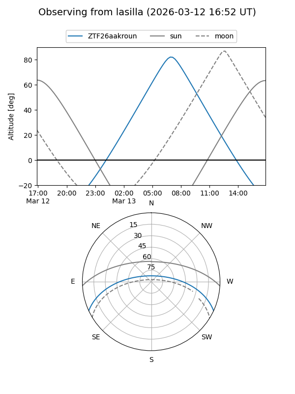
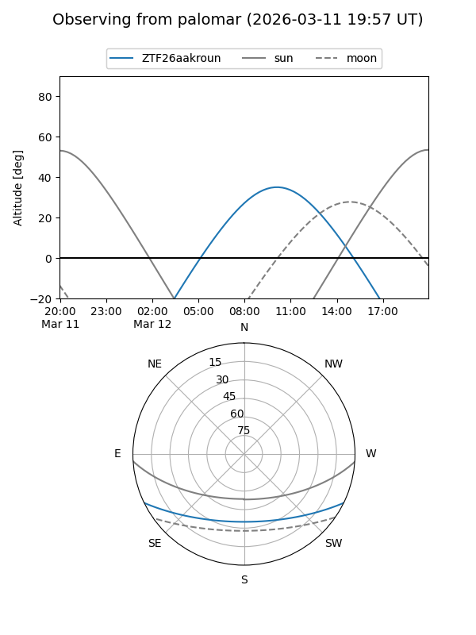

ZTF26aakroun
Target ZTF26aakroun at 2026-03-12 10:19
Aliases and brokers:
FINK: link
Lasair: link
ALeRCE: link
alt names
ZTF26aakroun (ztf,fink_ztf)
Coordinates:
equatorial (ra, dec) = 204.4384,-21.43090
equatorial (HMS+DMS) = 13:37:45.22,-21:25:51.25
galactic (l, b) = (317.0838,+40.16467)
Flags:
Photometry:
last ztfg=19.51
1 ztfg detections
Lightcurve
Visibility


Additional plots